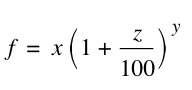
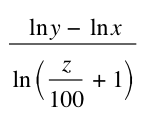

Future Value of deposits functions
The future value of deposits are pure interest calculations. It means that you deposit some money on the bank, and do nothing.
If you are looking for functions around savings, where some money are periodical put into your account or withdrawn, go to the
"future value of savings" functions.
The first function, is calculating the future value:
FutureValueOfDeposit(x; y; z )
Where
x = Present value
y = Compounding periods (years)
z = interest rate
The following formula is used:

where f is the future value.
Example:
You have 10.000 on a bank account. The interest rate is 2%. What is the future value after 10 years.
FutureValueOfDeposit(10000;10;2)=12189.9442
----------------------
The next function is the interest needed for a given future value.
InterestPVFV(
- Present value;
- Future Value;
- Compounding periods (years) )
Example:
What is the interest needed for getting the 10.000 to be 15.000 after 10 years?
InterestPVFV(10000;15000;10)=4.137974399
Let us check this with the previous function:
FutureValueOfDeposit(10000;10;4.137974399)=15000
This seams to be pretty accurate.
---------------------------
The next function is for calculating the number of years for a given future value:
YearsToFutureValue(x; y; z )
Where
x = Present value
y = Future value
z = annual interest rate
The following formula is used:

Example:
Let us say, that we test this with the values from the previous example, and see if we get 10 years:
YearsToFutureValue(10000;15000;4.137974399)=9.999999995
With a little rounding, this seems to be pretty accurate.